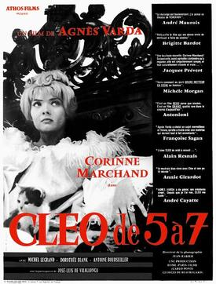

Agnès Varda
1962
90 minutes
This is a bit of a drag for a French New Wave film. It's directed by Agnès Varda and it follows a female singer who has about two hours to kill while waiting on the results of an upsetting medical test that (spoiler) has upsetting results. It's a bit moody and sad in a sort of amusing and stylish French New Wave way that never quite lets you despair all the way, just enough to be realistically depressed, which is somehow worse. There's a hilariously stunt-casted silent short film in the middle of it that makes the film worth it, of course, and that alone is worth the watch.
The film makes you ponder what you should do when you have two hours to kill, which often turns out to be the case. On a hunch, you hop online and look up the old MTV show 120 Minutes, which back in the heyday of MTV always played late on Sunday nights and featured two hours of early new-wave and "alternative" music videos. You are delighted to find that someone has already compiled a website full of playlists of all the old episodes of this show, complete with links to mostly-functional links to the official versions of those videos on Youtube.
You're a bit sad that this site didn't seem to be around back when your spouse was still around to enjoy it, as she was a superfan of this show back in the day. For your part you tended to balance watching this show with equal parts Headbangers Ball in the early days, but ended up getting bored with all the hair metal and enjoying all the weirder shit 120 Minutes was more likely to feature. You resolve that this might be a good thing to throw on next time you're at the gym on an exercise bike and looking for some sort of distraction to keep you occupied while you mindlessly push pedals for forty-five minutes or so.
You spend the next hour and a half (from 7 to 8:30, largely without ads and VJ interruptions) watching an animatronic Lou Reed peeling skin off a mechanized skull, The Blow Monkeys dancing around with maids and parasols, and Boys Don't Cry butching it up playing at being cowboys. You feel like you've dusted some cobwebs off your brain at the end.
Time to choose something different: